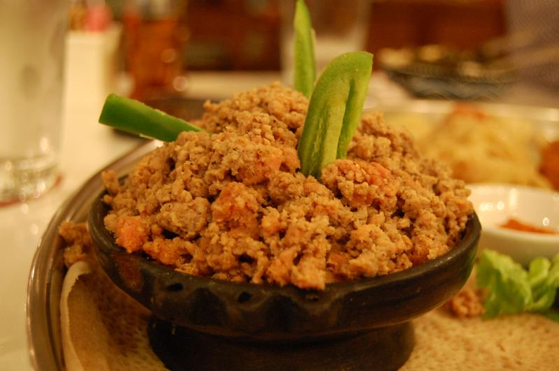

Homepage
Chechebsa

Description
A traditional Ethiopian breakfast made by breaking up crispy injera or kita (a type of flatbread) and mixing it with spiced butter (niter kibbeh) and berbere seasoning. It’s often served with honey or yogurt on the side.
Chechebsa is flavorful, slightly spicy, and pairs perfectly with Ethiopian coffee! ☕
Ingredients
- 1 Tbsp oil, for frying
- 1 1/4 cups all-purpose flour (or 1 cup all-purpose flour and 1/4 cup teff flour)
- 1/2 tsp salt
- 3/4 cup water (more or less, as needed for consistency)
- 4 Tbsp niter kibbeh (ethiopian spiced butter)
- 2 tsp berbere
Method
- Heat oil in a large skillet or griddle.
- Whisk together the flour and salt.
- Add 1/2 cup water and - adding 2 Tbsp more water at a time as needed -
keep whisking until you reach a smooth consistency (like a thin pancake batter).
- Pour the batter into the hot skillet over medium heat.
- Use the back of a wooden spoon to spread the batter into a single layer to form a large pancake.
Cook 2 to 4 minutes or until bottom is lightly browned.
- Flip the Kita, and cook other side another 1 to 2 minutes or until lightly browned and cooked
through. Set aside for a few minutes to cool.
- Once cooled, tear the Kita into small (about 1 inch) pieces.
- Add niter kibbeh and berbere to a large skillet, and stir until melted.
- Add the torn Kita to the skillet and stir with a wooden spoon until all the pieces are coated with the spicy butter.
- Cook for several minutesuntil heated throughout; the consistency should be moist but not mashed (like that of a moist bread-based stuffing).
- Spoon into individual bowls and serve immediately with a spoon while still warm.
- Optional:Top with a spoonful of yogurt and a pinch of berbere sprinkled over the yogurt.